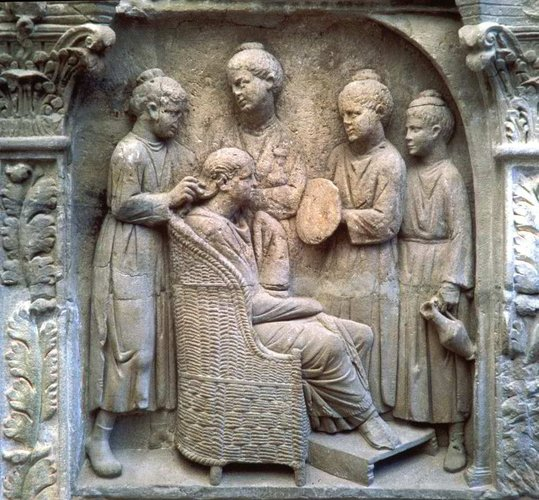
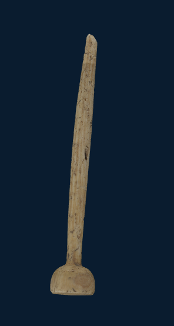
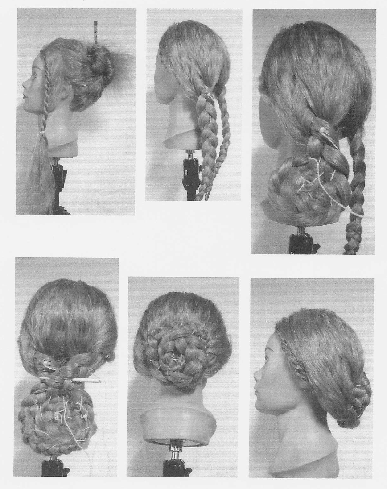
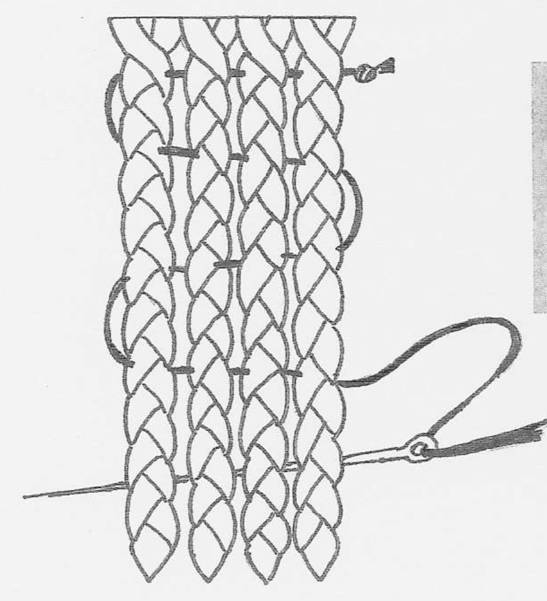

Hygiene und Kosmetik: Haarnadel aus dem Wareswald
Willkommen im Themenbereich „Hygiene und Kosmetik im Vicus Wareswald“
Entdecke, wie sich die Menschen im römischen Vicus Wareswald vor fast 2.000 Jahren pflegten und welche Schönheitsideale sie hatten.
Auf dieser Seite könnt ihr eine originale Haarnadel als interaktives 3D-Modell von allen Seiten betrachten. Erfahrt mehr darüber, wie römische Frisuren entstanden, welche Trends beliebt waren, wie sich diese verbreitet haben und welche Rolle Haare spielten. Testen Sie Ihr Wissen zum Abschluss in einem kleinen Quiz.
Körperpflege im römischen Alltag
Gepflegte Haare, wohlriechende Öle und kunstvolle Frisuren gehören für viele Menschen zur römischen Alltagskultur. Auch im Vicus Wareswald nutzten die Bewohner Gegenstände zur Körperpflege und zum Schmücken. Die hier gefundenen Objekte erzählen vom Alltag vor fast 2.000 Jahren und zeigen, wie weit römische Lebensgewohnheiten auch in den Nordwesten des Reiches gelangten.

Haarnadel aus dem Wareswald

Ziehe mit der Maus oder dem Finger, um die Haarnadel von allen Seiten zu betrachten.
Steckbrief
- Objekt
- Haarnadel
- Datierung
- 2.–3. Jh. n. Chr.
- Material
- Knochen
- Fundort
- Vicus Wareswald
- Zustand
- gut erhalten, kleine Kratzer
Haarnadeln dienten im römischen Alltag dazu, kunstvolle Frisuren zu befestigen und zu schmücken. Sie waren praktische Gebrauchsgegenstände, konnten aber zugleich den sozialen Status ihrer Trägerin zum Ausdruck bringen. Dieses Exemplar aus Knochen wurde im Vicus Wareswald gefunden und ist trotz kleiner Kratzer gut erhalten.
Frisuren
Haare galten im Römischen Reich als wichtiges Schönheitsmerkmal und Ausdruck des sozialen Status. Frauen investierten viel Zeit, Mühe und Geld in ihre Frisur, denn ein gepflegtes Äußeres stand für Ansehen und gesellschaftliche Zugehörigkeit. Besonders aufwendige Frisuren konnten nur mit der Hilfe einer erfahrenen Friseurin oder einer ornatrix, einer auf das Frisieren spezialisierten Sklavin, angefertigt werden. Die Haartrachten reichten von einfachen Frisuren bis zu kunstvollen Hochsteckfrisuren, waren jedoch stets sorgfältig gestaltet und fest in Form gebracht.
Für das Frisieren wurden verschiedene Hilfsmittel benötigt, um die oft aufwendigen Haartrachten dauerhaft in Form zu halten. Eine zentrale Rolle spielten dabei Haarnadeln aus Knochen, Bronze oder Bein, die die Frisuren zusammenhielten. Solche Nadeln wurden auch im Vicus Wareswald gefunden.

Haarnadeln – kunstvolle Helfer der römischen Frisuren
Aufwendige römische Frisuren entstanden Schritt für Schritt: Das Haar wurde geflochten, gedreht und zu Knoten oder Lockentürmen gelegt. Anschließend fixierte man die einzelnen Strähnen mit Haarnadeln aus Holz, Knochen oder Metall. Dabei wurden die Nadeln ähnlich wie eine Nadel mit Faden durch die Haarpartien geführt und „vernähten“ die Frisur, sodass sie den ganzen Tag hielt. Besonders bei den kunstvollen Frisuren wohlhabender Frauen waren mehrere Haarnadeln nötig, um die aufwendigen Formen zu stabilisieren.

Mode ging auch ohne Instagram viral
Heute verbreiten sich über Social Media Trends in wenigen Stunden. Im Römischen Reich übernahmen Münzen diese Aufgabe. Millionen Münzen mit den Porträts der Kaiserinnen gelangten in alle Provinzen des Reiches. Was den Stil der Frisuren betrifft, gaben zur Kaiserzeit die Damen des Hofes den Ton an. Aus den lückenlosen Münzserien, die ihre Bildnisse tragen, und aus Porträtköpfen, die oft mit Sicherheit zu identifizieren sind, lassen sich die – bisweilen sehr seltsamen – Veränderungen in der Haarmode deutlich ablesen.
Saubere Kleidung gehörte ebenso zu einem gepflegten Erscheinungsbild wie gebadete Haut. Tuniken bestanden meist aus Wolle oder Leinen. Wohlhabende Römerinnen trugen farbige Stoffe, Schmuck und aufwendig verzierte Gewänder. Männliche Römer trugen die weiße Toga, die Ritter mit einem schmalen Purpurstreifen, die Senatoren mit einem breiten Purpurstreifen.
Die kunstvollen Frisuren der kaiserlichen Frauen wurden überall gesehen und nachgeahmt. Wer modern sein wollte, orientierte sich an den Frauen des Kaiserhauses.
Kaiserinnen und Frisuren
Klicke auf ein Bild, um mehr über die kaiserlichen Frauen und ihre Frisuren zu erfahren.
Sehr schlichte Frisur, Mittelscheitel, Haare glatt zurückgenommen, kleiner Knoten. Sie steht für das Ideal der frühen Kaiserzeit: Bescheidenheit, Würde und traditionelle römische Tugenden.
Mittelscheitel mit glatt anliegendem Haar. Über der Stirn ein fächerförmiger Aufbau (fan-shaped coiffure), der aus feinen Strähnen oder Flechtwerk besteht. Unter ihr setzte sich ein eleganter, aber kontrollierter Stil durch. Die Frisuren wurden kunstvoller und zeigten die hohe Kunst römischer Friseurinnen (ornatrices).
Mittelscheitel, geflochtene Zöpfe und Dutt. Flechtfrisuren wurden zum Trend. Die Kombination aus Zöpfen und hochgestecktem Haar symbolisierte Eleganz und Wohlstand und wurde im ganzen Reich nachgeahmt.
Charakteristische Wellen und große Haarfülle; vermutlich teilweise mit Haarteilen oder Perücken ergänzt. Ihre Frisur war eine regelrechte Modeerscheinung. Voluminöse Frisuren galten als Zeichen von Luxus und Prestige. Importierte Perücken und Haarteile ermöglichten besonders eindrucksvolle Stylings.
Teste dein Wissen!
Wähle eine Antwort aus – du erhältst sofort Rückmeldung.
Bereits in der Antike wurden Haare gefärbt.
Schon damals nutzte man pflanzliche und mineralische Färbemittel, um Haare aufzuhellen oder abzudunkeln.
Im Römischen Reich gab es bereits öffentliche Toiletten mit fließendem Wasser.
Viele öffentliche Latrinen wurden kontinuierlich mit Wasser gespült.
Römerinnen und Römer nutzten Rötel als Lippenstift.
Rötel – ein rotes Mineralpigment – diente unter anderem zum Färben der Lippen.
Römerinnen trugen ausschließlich Perücken aus Tierhaar.
Manche trugen Perücken aus importiertem Menschenhaar.
Das Entfernen der Achselhaare war in der Antike nur für Frauen üblich.
Sowohl Männer als auch Frauen entfernten ihre Achselhaare.
Die Römer benutzten Seife zum täglichen Waschen ihres Körpers.
Meist reinigten sie ihre Haut mit Öl und einem Strigilis, einem gebogenen Metallschaber.
Alle Römer trugen nur weiße Kleidung.
Wohlhabende Römerinnen und Römer trugen durchaus farbige Stoffe und Purpurstreifen als Zeichen ihres Standes.
Beauty damals vs. heute
Klicke zuerst auf einen antiken Begriff und dann auf das passende moderne Produkt.
Antike Mittel
Heute
Die Haarnadel und das Salbgefäß zeigen, dass die Bewohnerinnen und Bewohner des Vicus Wareswald an den Lebensgewohnheiten des Römischen Reiches teilhatten. Körperpflege, Düfte und modische Frisuren waren nicht nur in den großen Städten verbreitet, sondern gehörten auch in einer kleineren Siedlung wie dem Wareswald zum Alltag.